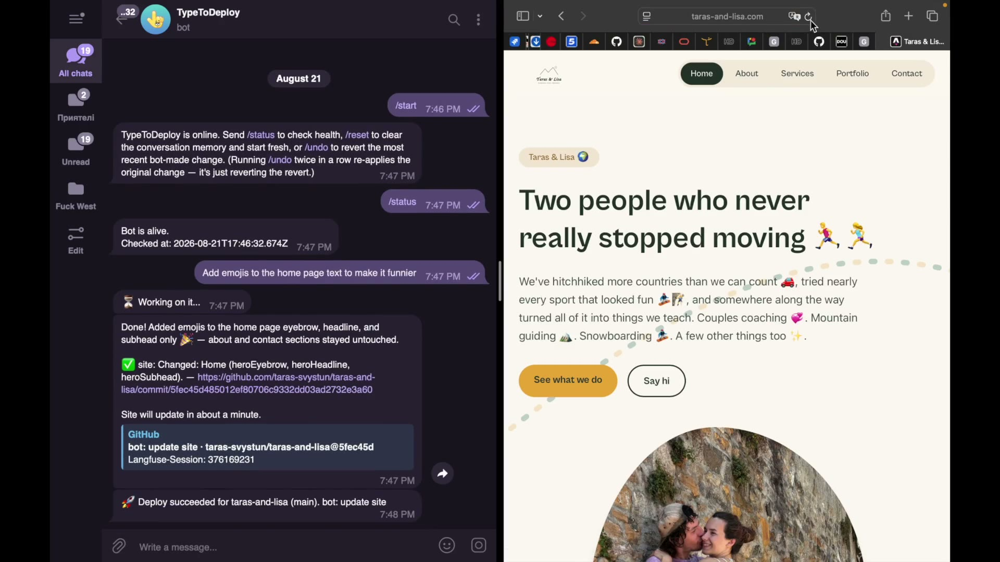

TypeToDeploy permet à une personne sans compétence technique de modifier le contenu d’un site web professionnel depuis une simple conversation Telegram. La modification est vérifiée automatiquement, enregistrée dans le code source, puis mise en ligne.
Un site web moderne est rapide, bien référencé et peu coûteux à héberger, parce qu’il est construit comme du code plutôt que dans un outil d’édition.
La contrepartie est directe : son propriétaire ne peut pas le modifier lui-même. Changer un tarif, une date, un horaire ou une photo suppose de repasser par un développeur.
Dans les faits, ces sites ne sont plus mis à jour. L’information devient fausse, et le site cesse de remplir sa fonction.
Lisa est coach et formatrice. Son site présente son activité, ses prestations et ses tarifs. Elle ne pouvait pas le modifier elle-même : chaque changement passait par Taras.
Nous avons construit l’outil qui manquait. Lisa est aujourd’hui la première utilisatrice de TypeToDeploy, sur un site réellement en ligne.
Aucune interface à apprendre, aucun compte à créer, aucun tableau de bord. L’outil se place dans un canal que la personne utilise déjà.
Un message en langage courant : « change le tarif du cours collectif à 45 € ».
Le modèle identifie le champ concerné dans le contenu du site et prépare la modification exacte à appliquer.
Un contrôle automatique compare le périmètre annoncé et la modification réellement produite. Toute modification hors périmètre est refusée avant tout enregistrement.
La modification est enregistrée dans le dépôt de code, le site est reconstruit et publié. Une confirmation est renvoyée dans la conversation.
Une démonstration complète : un message envoyé, la modification vérifiée, le site mis à jour.

Voir la démonstration complèteChaque élément ci-dessous est indiqué avec son état réel. Rien n’est présenté comme terminé s’il ne l’est pas.
Un modèle de langage qui écrit directement dans le code source d’un site en production représente un risque concret.
Lors des premiers essais, les consignes écrites dans le prompt n’ont pas suffi : le modèle a modifié des champs situés en dehors de la demande, tout en justifiant sa décision dans sa réponse.
La réponse à ce problème n’est pas une meilleure consigne, mais un contrôle déterministe. Avant tout enregistrement, le système compare la liste des champs réellement modifiés et le périmètre déclaré par l’agent. Si les deux ne correspondent pas, la modification est refusée et rien n’est écrit.
C’est ce contrôle qui rend l’outil utilisable sur un site réel plutôt que sur une démonstration.
Le prototype fonctionne. La demande, elle, n’est pas encore démontrée. Voici les hypothèses que je cherche à vérifier et la méthode prévue.
Une personne non technique met effectivement son site à jour plus souvent lorsque la barrière disparaît.
Suivi de la fréquence de mise à jour sur 8 semaines, auprès d’un premier groupe d’utilisateurs pilotes.
Une augmentation nette et mesurable par rapport à la période précédente.
Le premier client est le propriétaire du site : indépendant, petite structure ou association.
Entretiens qualitatifs auprès de propriétaires de sites professionnels.
Une majorité déclare renoncer régulièrement à une mise à jour à cause de la démarche à engager.
Ou bien le premier client est l’agence ou le développeur indépendant qui maintient ces sites.
Entretiens qualitatifs auprès d’agences web et de développeurs indépendants.
Une majorité identifie les petites modifications client comme une charge fréquente et peu rentable.
Le contrôle de périmètre est suffisant pour permettre une utilisation sans supervision technique.
Campagne de tests adverses : demandes ambiguës, contradictoires ou hors périmètre.
Aucune modification hors périmètre enregistrée.
Il existe un prix acceptable pour ce service.
Test de prix auprès des personnes interrogées.
À définir à l’issue des entretiens.
Les deux hypothèses de segment sont présentées ensemble volontairement. Nous ne savons pas encore laquelle est la bonne, et les entretiens servent précisément à trancher.
Aujourd’hui l’agent modifie du contenu structuré. L’étape suivante consiste à lui permettre de modifier le site lui-même.
Étendre le contrôle de périmètre au code source, et non plus seulement aux champs de contenu.
Permettre l’ajout et la modification de sections, de pages et de mise en page, avec prévisualisation avant publication.
Permettre le raccordement de l’outil à un site existant qui n’a pas été conçu pour lui.
Chaque étape dépend de la précédente. La priorité reste la fiabilité avant l’étendue des fonctions.
Les indépendants, les petites structures et les associations qui disposent d’un site et qui n’ont pas les moyens de mobiliser un développeur pour une modification de dix minutes.
Et, en amont, les agences et développeurs indépendants qui maintiennent ces sites : les petites demandes de leurs clients sont fréquentes, peu rentables et difficiles à planifier.
L’objectif n’est pas de remplacer un outil de gestion de contenu, mais de rendre modifiable un site qui, aujourd’hui, ne l’est pas.
Deux personnes, deux rôles distincts, et un projet né d’un besoin que nous avions nous-mêmes.
Coach et formatrice. Elle conçoit et anime des accompagnements en communication, en encadrement de groupes et en pratiques de plein air.
C’est son site professionnel qui est à l’origine du projet, et c’est elle qui utilise l’outil au quotidien. Elle porte la relation utilisateur, les entretiens de validation et le développement de l’activité.
Quatre ans d’expérience en développement logiciel et en apprentissage automatique.
Il a conçu et développé l’ensemble du système : l’agent, le contrôle de périmètre, l’intégration au dépôt de code et la mise en production.
L’utilisatrice de l’outil et sa conceptrice sont dans la même équipe. Chaque limite rencontrée à l’usage revient directement dans le développement.
Le prototype est construit et fonctionne. Ce qui nous manque n’est pas technique.
Un accès à des utilisateurs test — indépendants, petites structures, associations — pour vérifier nos hypothèses dans des conditions réelles plutôt qu’en interne.
Un regard extérieur pour trancher entre nos deux hypothèses de segment, et pour construire un modèle économique. C’est aujourd’hui notre principale zone d’incertitude.
Un cadre de travail et un rythme de suivi régulier, en parallèle de nos activités.
Un financement couvrant l’hébergement, les coûts d’appel au modèle et le temps consacré à la phase pilote.